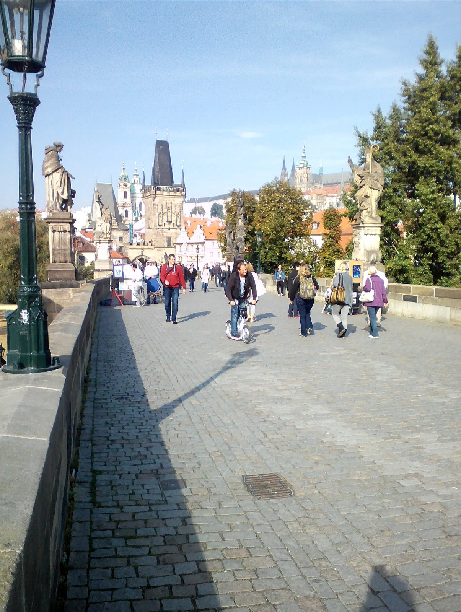
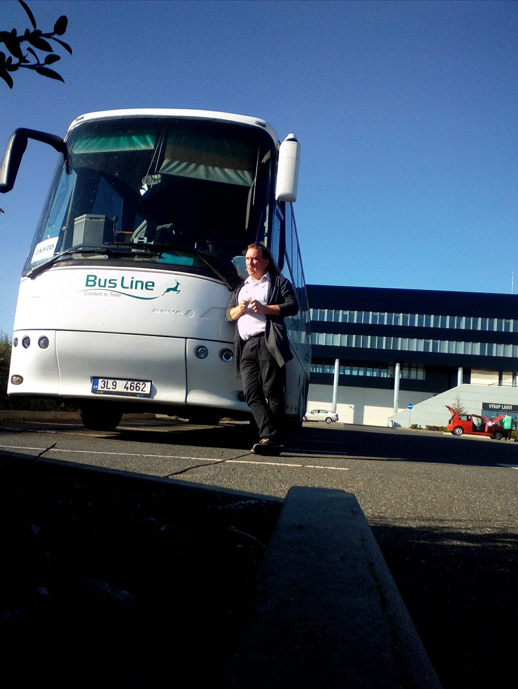
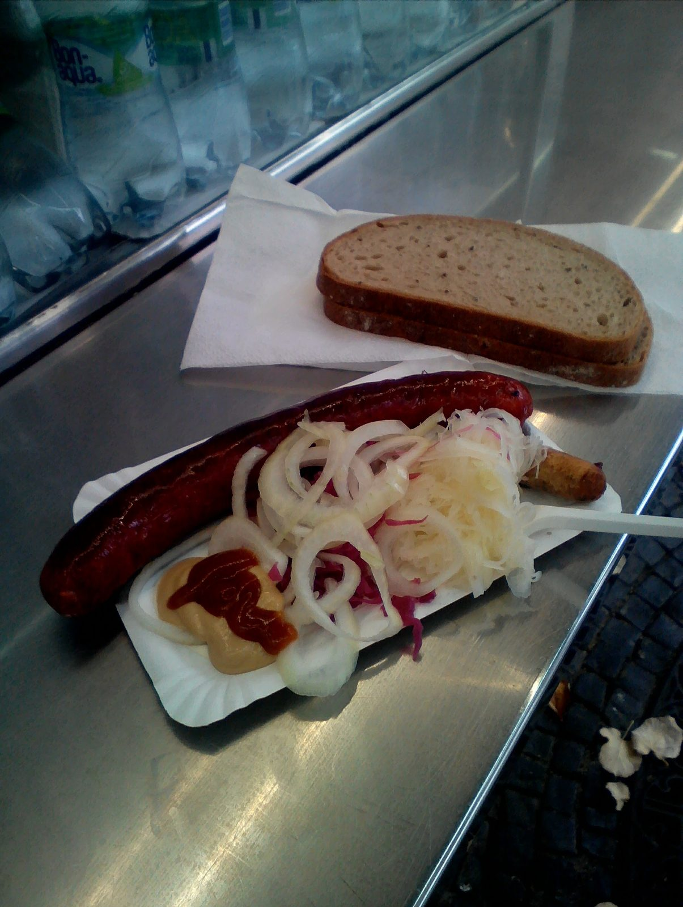
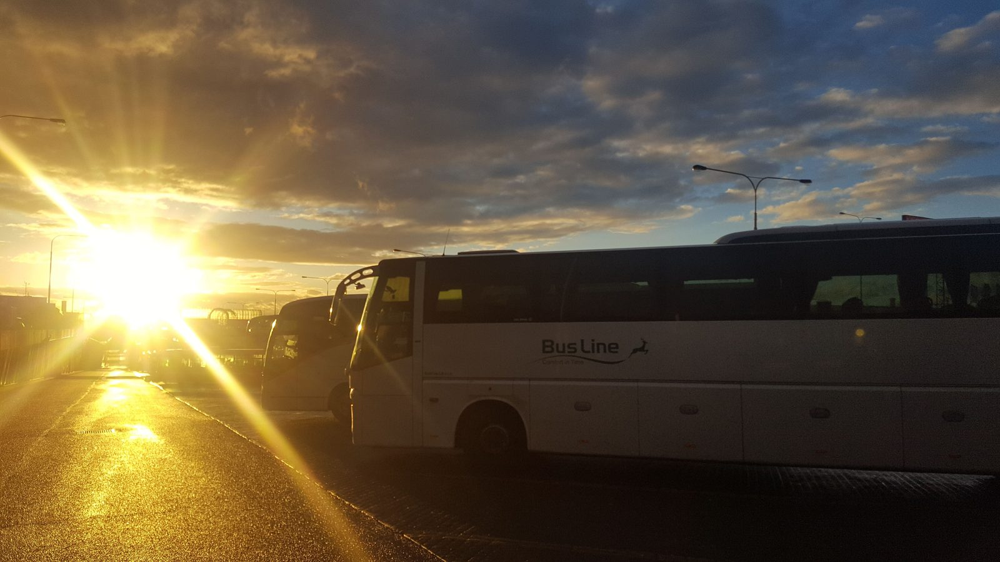
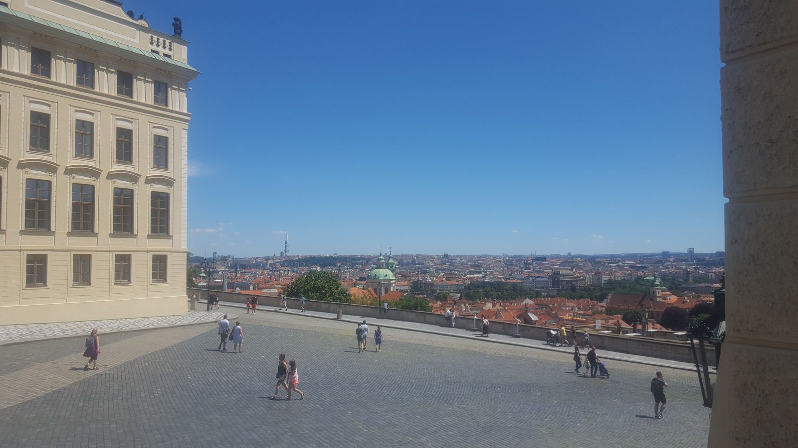
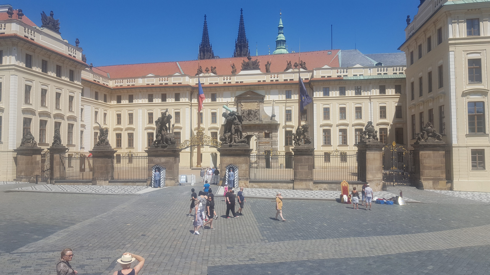

Domov, hory, voda & města
Krkonoše, Lipno, Český Krumlov, Praha, jižní Čechy — místa kam se vracím. Roky 2016–2019.
🏔 Krkonoše
(14 fotek)


Dalších 10 fotografií (celkem 14)Sbalit další fotografie


🌊 Lipno
(11 fotek)


Dalších 5 fotografií (celkem 9)Sbalit další fotografie


🏰 Český Krumlov
(4 fotek)


🏛 Praha
(14 fotek)



Dalších 10 fotografií (celkem 14)Sbalit další fotografie







🏛 Jižní Čechy
(2 fotek)


📸 Další záběry
(8 fotek)


Dalších 4 fotografií (celkem 8)Sbalit další fotografie


Česko na videu
Rozhledna U Borovice a tenisový areál Na Kruhách. Videa s českým komentářem.
Pro koho je tato stránka: kdo se chce podívat, jak vypadá Česko očima řidiče, který tu žije a zároveň ukazuje kus země klientele autobusu.
Co tady najdeš: Krkonoše na podzim, Lipno v létě, Český Krumlov, Praha a jižní Čechy. Roky 2016–2020.
Poznámky k cestě
Česká republika je můj domov a zároveň zem, kterou si často dopřávám pro rekreaci. V Krkonoších chodím na podzim do barev, na Lipně v létě k vodě. Český Krumlov je perla jižních Čech, kterou ukazuju klientele autobusu. Praha jako kulturní centrum a jižní Čechy s historií Písku, atomovkou v Temelíně.
Tip na návštěvu Pražského hradu
Reklama · Za rezervaci mohu získat provizi. Nabídku zobrazuje GetYourGuide.